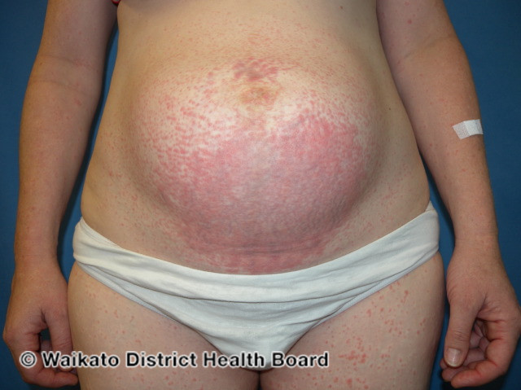

Polymorphic Eruption of Pregnancy
- Common, 1/160 – 1/200 pregnancies.1
- Most often primigravida, usually do not recur in subsequent pregnancies unless multiple gestation.1
- Associated with maternal weight gain and multiple gestations.1
- Also has been called pruritic and urticarial papules and plaques of pregnancy.1
- Unknown.2
- Possible abdominal stretching causes damage to connective tissue that illicit an inflammatory response.2
- Onset:
- Onset 3rd trimester or postpartum.1
-
- Starts in abdominal striae, spares umbilical area (Pemphigoid gestationis involves umbilical area).1
- Can spread to thighs, buttocks, back or generalized.1
- Rash:
- Start as pruritic papules that form plaques and later can become polymorphic with vesicules with target lesions or eczematous change.1
- Course:
- Resolves 4-6 weeks postpartum.1

Source: DermNet. https://dermnetnz.org/topics/polymorphic-eruption-of-pregnancy/.
- Most often primigravida, usually do not recur in subsequent pregnancies unless multiple gestation.1
- None.1,2
- Oral antihistamines:1
- Diphenhydramine.
- Hydroxyzine.
- Topical steroids.1
- Oral steroids if severe.1
- PROLOG: Obstetrics, Eighth Edition. Questions 144-147.
- Common Dermatologic Conditions, Clinical Updates in Women's Health Care, January 2018